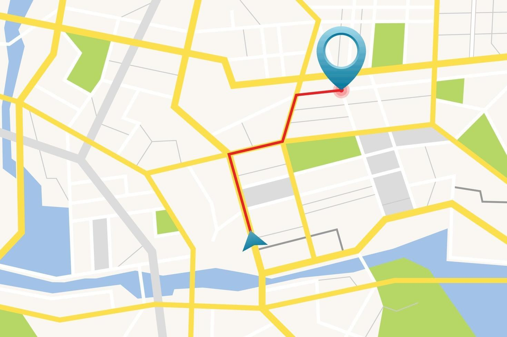

Coordenação de Cursos Superiores
A Coordenação de Cursos Superiores do IFRN atua na organização e acompanhamento das atividades acadêmicas dos cursos de graduação. Suas principais funções incluem planejar, supervisionar e apoiar processos pedagógicos, além de orientar estudantes e professores. Também é responsável por garantir o cumprimento do projeto pedagógico dos cursos, promover melhorias na qualidade do ensino e facilitar a comunicação entre a instituição, os docentes e os discentes.
